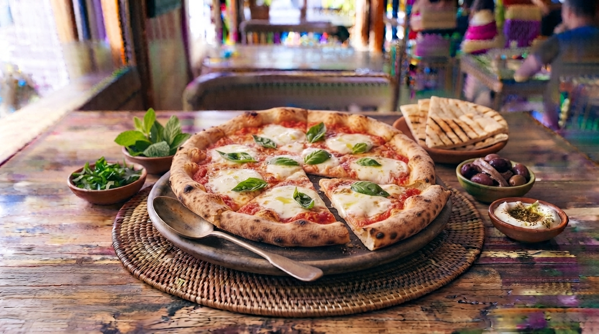

Pizza Margherita Tradicional
A rainha das pizzas napolitanas. Simples, fresca e deliciosa, combinando massa de fermentação lenta, molho de tomate natural, mozzarella de búfala fresca e folhas de manjericão.

⏱️ Tempo: 2h (inclui fermentação)
🍽️ Rendimento: 2 pizzas médias
🔥 Dificuldade: Média
Ingredientes
- 300g de farinha de trigo tipo 00
- 200ml de água morna e 5g de fermento biológico fresco
- 200g de molho de tomate pelado triturado
- 250g de mozzarella de búfala
- Folhas de manjericão fresco e azeite de oliva
- Sal a gosto
Modo de Preparo
- Dissolva o fermento na água morna. Misture com a farinha e o sal, amassando bem até obter uma massa lisa. Deixe levedar por 1h30.
- Abra a massa com as mãos formando um disco redondo.
- Espalhe o molho de tomate, distribue a mozzarella de búfala rasgada e regue com um fio de azeite.
- Asse em forno muito quente (máximo possível, idealmente 250°C ou superior) por cerca de 8 a 10 minutos.
- Finalize com folhas de manjericão fresco logo após sair do forno.